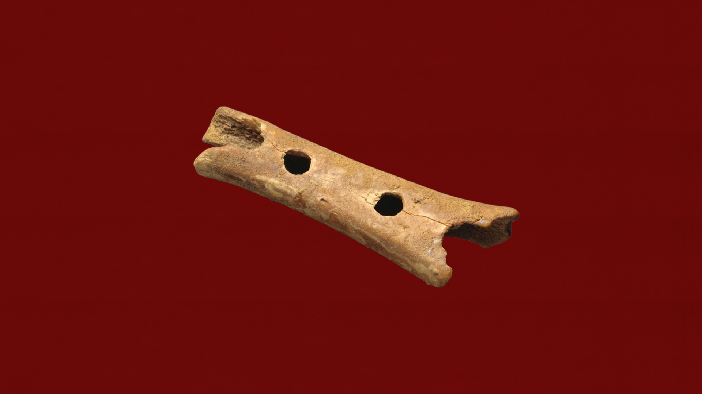
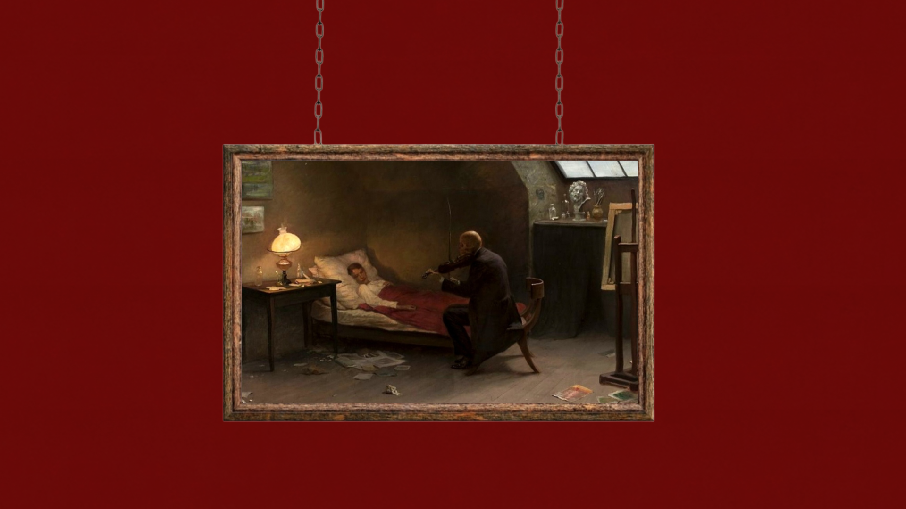
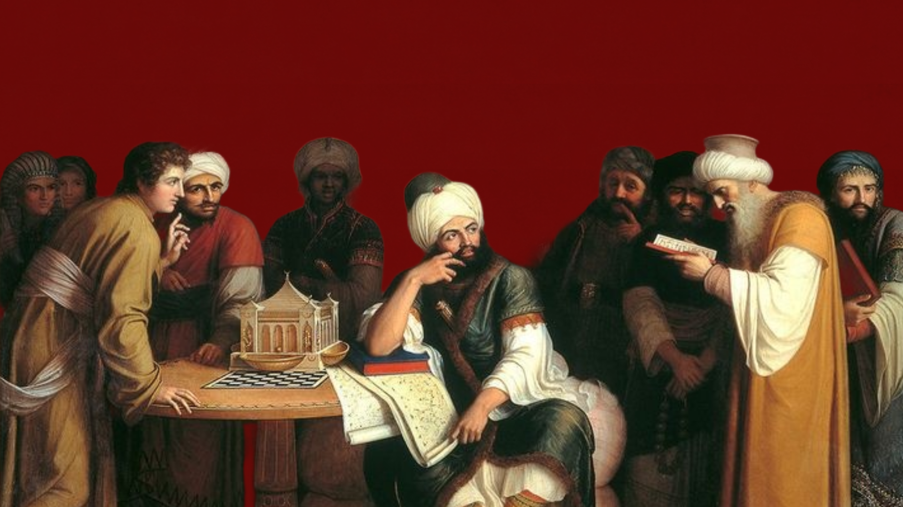
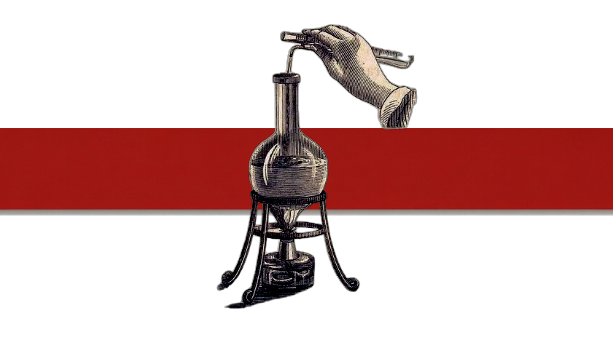
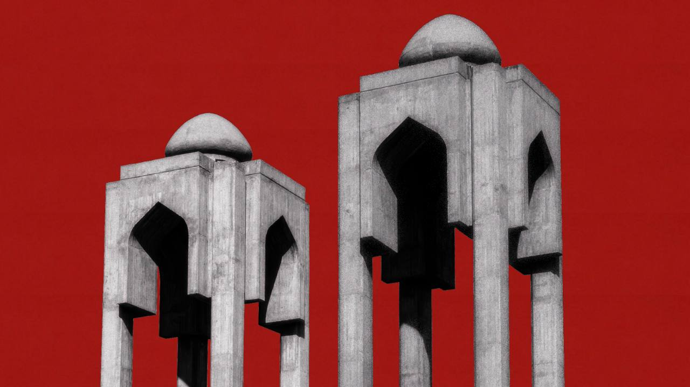
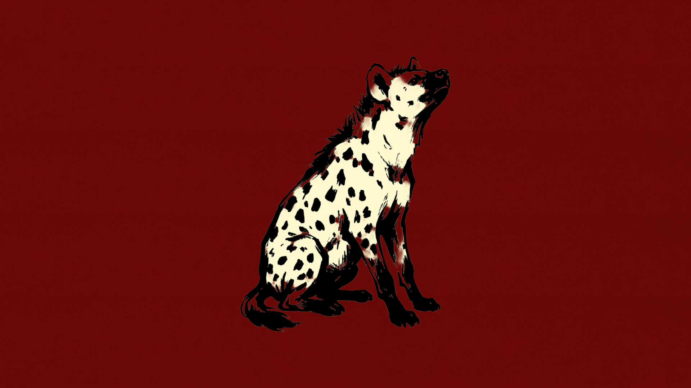
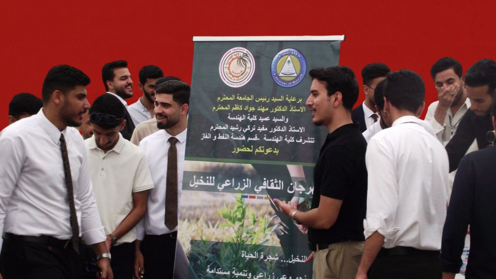
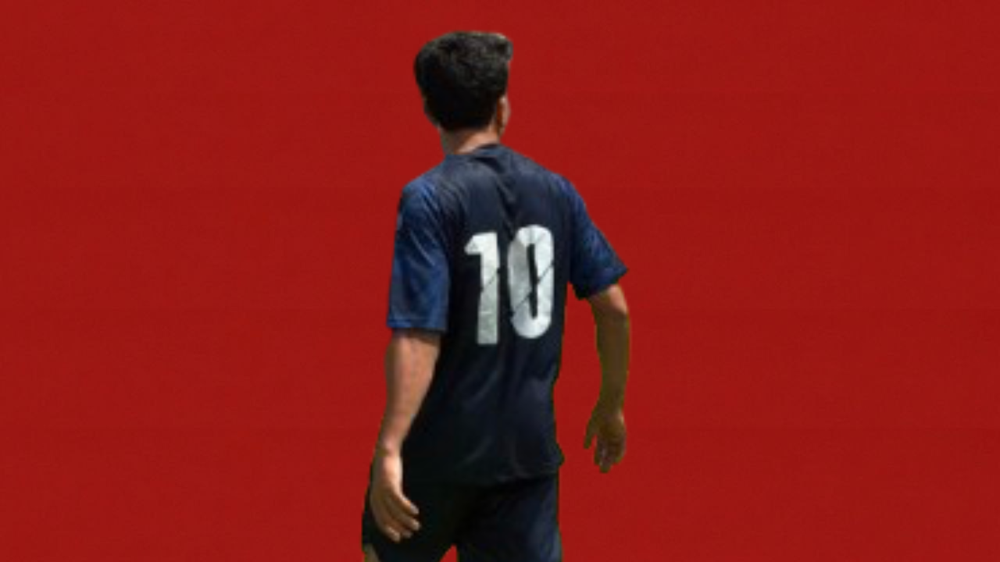
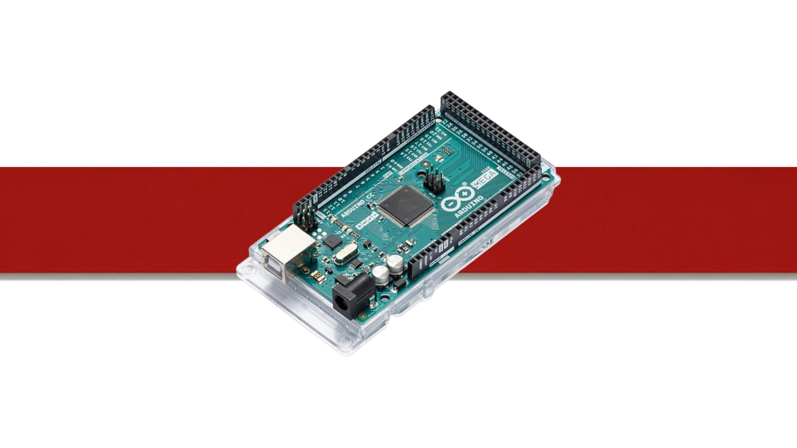
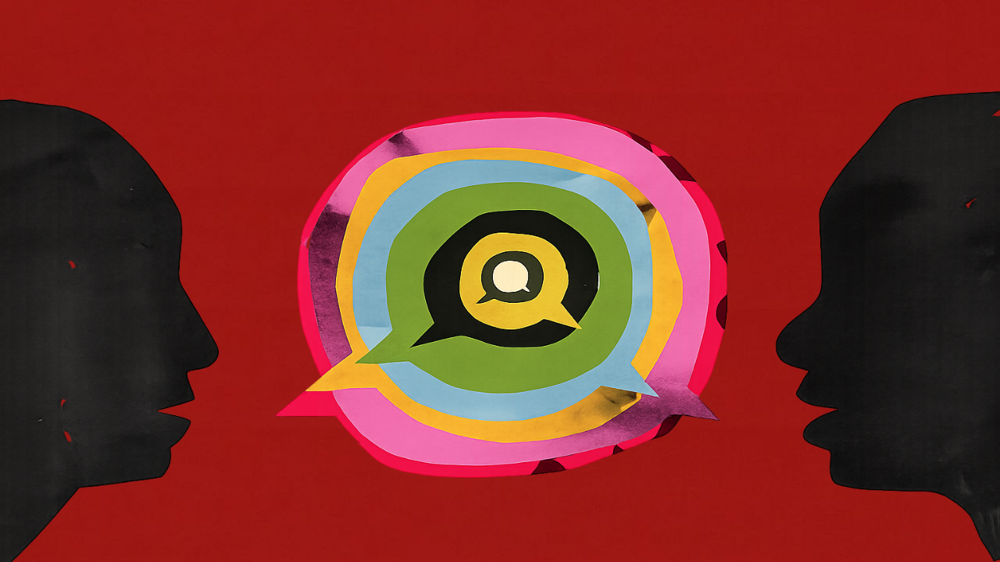

ثقافةكيف الهمتنا الطيور لصناعة الموسيقى؟

ترفيههل ينتظره الموت أم جلس يواسيه؟
 ترفيه
ترفيه
بين رقة الوجدان وصلابة الفكر

ثقافةليلة سقوط بغداد وانتهاء الخلافة العباسية

اراءشهادات بلا ممارسة؟ نقص المختبرات يهدد كفاءة الخريجين
 ترفيه
ترفيه
نحن نحلم بالغد.. لكن الغد لا يأتي
ترفيه
كيف تصنع التفاصيل الصغيرة سلاماً

آراءالذكرى الـ 62 لتأسيس الجامعة
آراء
بين جيل الصمت وجيل المنصات
.png) ترفيه
ترفيه
ما بين الحياة والموت مكتبة

ترفيهومن يصنع المعروفَ في غير أهله ِ يلاقي الذي لاقى مجيرُ أمِّ عامرِ

أحداثموسم زراعة النخيل: شجرة الحياة

أحداثفريق موظفي الجامعة إلى النهائي
 آراء
آراء
عندما يصبح التفوق قولبةً للمعرفة… هل فقدنا مهارة التعلم الجامعي؟

تكنلوجياالتأثير السلبي للأردوينو على طلاب الهندسة
اراء
من خطوة على القمر إلى حلم الاستيطان

مقابلات